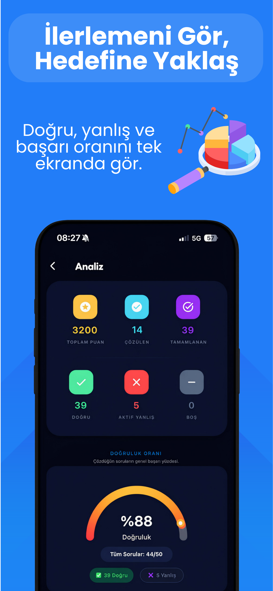
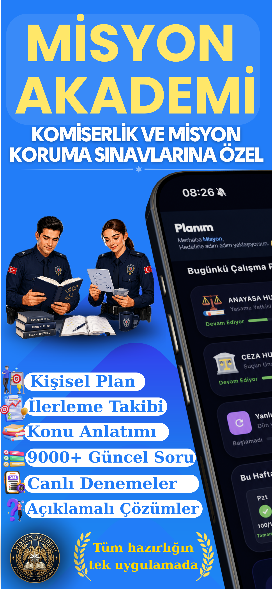
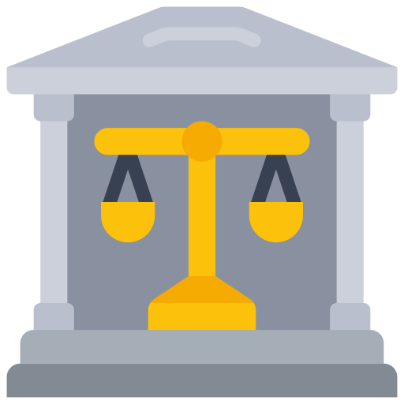
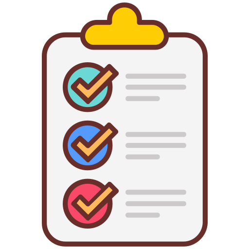
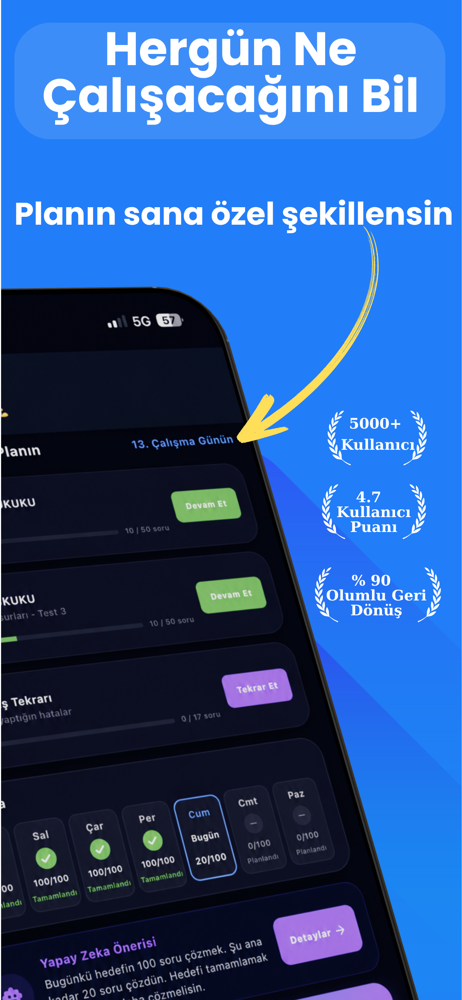
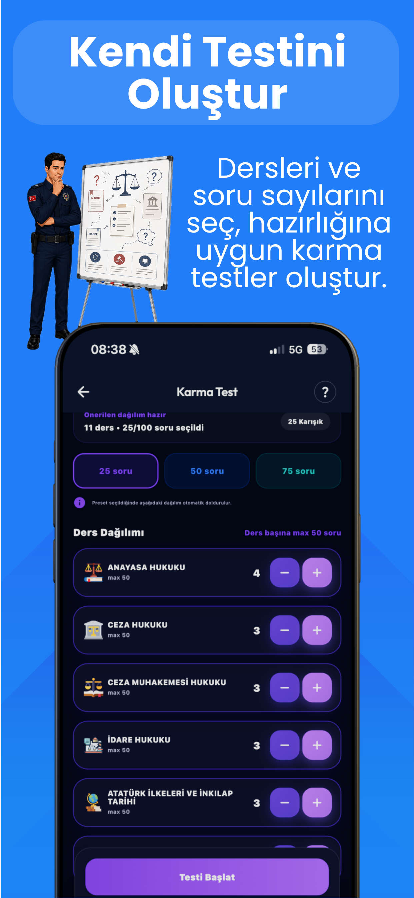
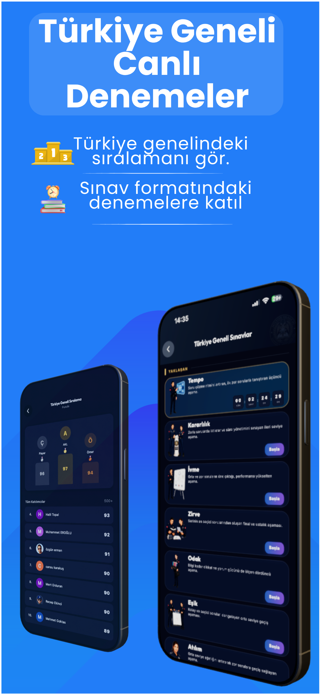
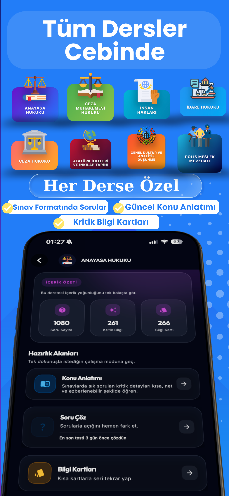
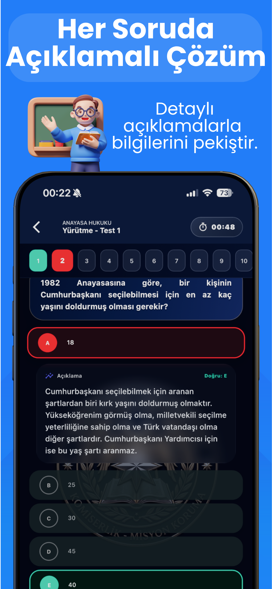

Kişisel Çalışma Planı
Günlük hedefini belirle; hangi dersten kaç soru çözeceğini önceden gör.
Misyon Akademi, Komiser Yardımcılığı ve Misyon Koruma adayları için geliştirildi. Günlük planını takip et, açıklamalı soruları çöz ve eksik olduğun konuları tek yerden gör.


Bugün 10 yeni Premium üye
Ne çözeceğini planla, sonucunu gör ve tekrar etmen gereken konulara dön. Çalışma düzenini farklı araçlarla uğraşmadan sürdürebilirsin.
Günlük hedefini belirle; hangi dersten kaç soru çözeceğini önceden gör.
Doğru, yanlış ve boş sayılarını ders bazında incele. Yeniden çalışman gereken konuları kolayca fark et.
Yanlış cevapladığın soruları ayrı bir listede gör ve hazır olduğunda yeniden çöz.
Cevabı kontrol etmekle kalma; her sorunun açıklamasını okuyarak konuyu pekiştir.
Dersleri ve soru sayısını seçerek kendi testini hazırla veya Türkiye geneli canlı denemeye katıl.
Canlı deneme sonuçlarını ve sıralamanı gör. Düzenli çalıştıkça performansındaki değişimi takip et.
Komiser Yardımcılığı ve Misyon Koruma sınavlarında çalışman gereken derslerin sorularına ve konu içeriklerine uygulamadan ulaşabilirsin.

Ceza Hukuku
Protokol BilgisiÇalışacağın dersi ve günlük soru hedefini gör. Nerede kaldığını düşünmeden planına devam et.

Her testten sonra doğru, yanlış ve boş sayılarını; doğruluk oranını ve ders bazındaki performansını incele.
İstersen 25, 50 veya 75 soruluk bir test oluştur. Canlı denemelerde süreni ve Türkiye genelindeki sıralamanı gör.


Günlük plan, dersler, açıklamalı çözümler, performans analizi ve canlı deneme ekranlarını incele.


Haftanın her günü programdaki dersten bir test paylaşılır. Gün içinde farklı derslerden ek testler de gelebilir.
Telegram kanalına katılDaha fazla soru çözmek için Misyon Akademi’yi indir.
Günün planlı testi 21.00’de yayınlanır. Yöneticiler gün içinde farklı derslerden ek testler de paylaşabilir.
Planını gireceğin sınava ve ayırabileceğin zamana göre oluştur.
O gün için belirlenen soruları çöz; konu anlatımlarıyla eksiklerini tamamla.
Analizlerini incele, zayıf kaldığın dersleri sonraki çalışma planına ekle.
İndirmeden önce en çok sorulan konuların yanıtlarına göz at.
Misyon Akademi, Komiser Yardımcılığı ve Misyon Koruma sınavlarına hazırlanan adaylar için geliştirilmiştir.
Evet. Uygulamayı ücretsiz indirebilir ve her gün sunulan ücretsiz soruları çözebilirsin. Premium içerikler ayrıca satın alınır.
Evet. Uygulamadaki soruların tamamında doğru cevabı anlamana yardımcı olan açıklamalar bulunur.
Analiz ekranında doğru, yanlış ve boş sayılarını; doğruluk oranını ve tamamladığın testleri görebilirsin.
Evet. Misyon Akademi hem App Store hem de Google Play üzerinden indirilebilir.
9.000+ tamamı açıklamalı soru, 11 ders, kişisel plan ve denemeler bir arada.